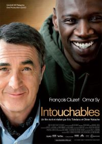
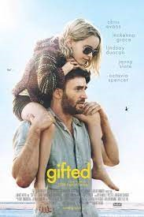

.png)
Intocables
| Estreno | Año 2011 |
| Duración | 112 minutos |
| Protagonistas | François Cluzet Omar Sy |
| Producción | Laurent Zeitoun Nicolas Duval Adassovsky Yann Zenou Año 2011 Protagonistas François Cluzet Omar Sy |
| Información obtenida de | https://es.wikipedia.org/wiki/Wikipedia:Portada |
Sinopsis:
Como resultado de un accidente de parapente que le ha dejado tetrapléjico, Philippe, un rico aristócrata, contrata como cuidador a domicilio a Driss, un inmigrante de un barrio marginal recién salido de la cárcel. En una palabra, la persona menos indicada para el puesto. No obstante, entre los dos, acaban logrando que convivan Vivaldi y Earth Wind and Fire, la elocuencia y la hilaridad, los trajes de etiqueta y las medias del chándal. Dos mundos enfrentados que, poco a poco, congenian hasta forjar una amistad tan disparatada, divertida y sólida como inesperada, una relación única en su especie de la que salen chispas transformándoles en… “Intocables”.
Información obtenida de:cinemascomics
La forma del agua

| Estreno | 8 de diciembre de 2017 Estados Unidos 12 de enero de 2018 México |
| Duración | 123 minutos |
| Protagonistas | Sally Hawkins Michael Shannon Richard Jenkins Octavia Spencer Doug Jones |
| Producción | J. Miles Dale Guillermo del Toro |
| Información obtenida de | https://es.wikipedia.org/wiki/Wikipedia:Portada |
Sinopsis:
Un monstruo del agua (Doug Jones) es capturado en el Amazonas, donde se le venera como a un dios, y llevado a un laboratorio secreto del gobierno en Estados Unidos. Estamos a principios de los años sesenta en plena guerra fría. En ese lugar trabaja como afanadora Eliza (Sally Hawkins) y su amiga Zelda (Octavia Spencer) que es afroamericana.
A cargo del monstruo está Strickland (Michael Shannon) y la investigación del espécimen es responsabilidad del doctor Hoffsteiter (Michael Sruhlbarg) que es un espía soviético encubierto. El policía, un sádico, se ensaña contra el monstruo mientras que Eliza lo trata bien. Ella le lleva huevos cocidos y le pone música. En esas visitas siempre a escondidas, después de realizar su trabajo, se enamora de él.
Eliza se entera de que ha llegado la orden de matar al monstruo. En complicidad con su vecino Giles (Richard Jenkins), con el que comparte departamento en lo altos del Cine Orpheus, y también con Zelda y el científico espía organiza el rescate del monstruo y se lo lleva a vivir a su casa. Inunda el baño y le construye una pecera. Ahí, flotando en el agua, tiene relaciones con él.
Ella espera que crezca la marea, para llevarlo a un canal cerca del muelle y desde ahí pueda regresar al lugar donde antes vivía. Strickland tiene órdenes de sus superiores de encontrar al monstruo. El espía ruso, que ha sido herido de muerte por los suyos, da al policía la pista de que el monstruo está con Eliza. Cuando llega a su departamento ya no hay nadie. Los alcanza en el muelle. Hay disparos y ella cae muerta y el monstruo herido. Él se cura con el pase de su mano sobre la herida y luego mata al policía. Levanta con sus brazos a Eliza y se introduce con ella al mar.
Información obtenida de:animalpolitico
El lado luminoso de la vida
| Estreno | Año 2012 |
| Duración | 122 minutos |
| Protagonistas | Bradley Cooper Jennifer Lawrence Robert De Niro Jacki Weaver Chris Tucker |
| Producción | Bruce Cohen Donna Gigliotti |
| Información obtenida de | https://es.wikipedia.org/wiki/Wikipedia:Portada |
Sinopsis:
La vida no siempre marcha según lo previsto.
Pat Solatano (Bradley Cooper) lo ha perdido todo: su casa, su trabajo y a su mujer. Ahora se encuentra viviendo nuevamente con su madre (Jacki Weaver) y su padre (Robert De Niro), después de pasar ocho meses en una institución mental tras llegar a un acuerdo con la fiscalía. Pat está decidido a rehacer su vida, mantener una actitud positiva y reconciliarse con su mujer, pese a las particulares circunstancias de su separación. Lo único que quieren los padres de Pat es que su hijo levante cabeza y comparta con el resto de su familia su obsesión por su equipo de fútbol americano favorito de Filadelfia. Cuando Pat conoce Tiffany (Jennifer Lawrence), una misteriosa chica con un cúmulo de problemas propios, la situación se complica. Tiffany se ofrece a ayudar a Pat a recuperar a su mujer, pero únicamente si él hace a cambio algo que a ella le resulta muy importante. A medida que van cumpliendo sus respectivas partes del trato, empieza a formarse un inesperado vínculo entre ellos y van poco a poco descubriendo el lado positivo de sus vidas.
Información obtenida de:LaHiguera.net
Historia de un matrimonio

| Estreno | 29 de agosto de 2019 (Festival de Cine de Venecia) 6 de noviembre de 2019 (Estados Unidos) 6 de diciembre de 2019 (Netflix) |
| Duración | 136 minutos |
| Protagonistas | Scarlett Johansson Adam Driver Laura Dern Alan Alda Ray Liotta Julie Hagerty Merritt Wever |
| Producción | David Heyman |
| Información obtenida de | https://es.wikipedia.org/wiki/Wikipedia:Portada |
Sinopsis:
Nicole (Scarlett Johansson) es una actriz que dejó una prometedora carrera en el cine comercial para trabajar en la compañía teatral de su marido Charlie (Adam Driver), un director de teatro en pleno auge del que ahora se está divorciando. Con una química aplastante y un hijo en común, la historia de amor de esta pareja se romperá por completo, llegando a tener incluso que recurrir a los abogados y tribunales para zanjar una vida en común llena de heridas abiertas. El cineasta Noah Baumbach se encarga de dirigir y escribir el guion de este drama protagonizado por Adam Driver y Scarlett Johansson
Información obtenida de: SENSACINE
Un don excepcional
| Estreno | 7 de abril de 2017(Estados Unidos) 16 de julio de 2017(México ) |
| Duración | 101 minutos |
| Protagonistas | Chris Evans Mckenna Grace Octavia Spencer |
| Producción | Amdy Cohen |
| Información obtenida de | https://es.wikipedia.org/wiki/Wikipedia:Portada |
Sinopsis:
Frank Adler (Chris Evans) es un hombre soltero que cría a su avispada sobrina Mary (Mckenna Grace) en una pequeña ciudad costera de Florida. Pero Mary es una brillante niña prodigio, y la intención de Frank de que su sobrina lleve una vida normal se ve frustrada cuando el extraordinario dominio de las matemáticas que posee Mary con sólo 7 años llega al conocimiento de la tremenda madre de Frank, Evelyn (Lindsay Duncan), una pudiente bostoniana que planea separar a su nieta de su hijo. Mientras la división y las tensiones familiares van en aumento, tío y sobrina encuentran apoyo en Roberta (Octavia Spencer), su protectora casera y mejor amiga, y en la profesora de Mary, Bonnie (Jenny Slate), una joven cuyo interés por su alumna desemboca pronto en una relación también con su tío.
Información obtenida de:LaHiguera.net